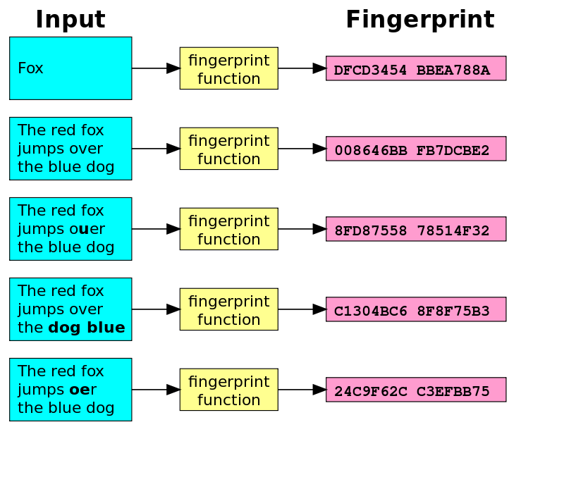
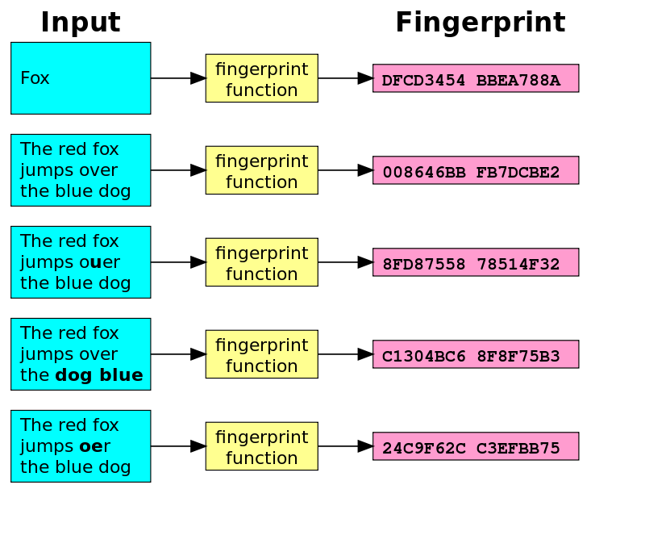

FINGERPRINTS
FingerPrints: A Brief Summary of Web Security
Soohan Cho
Allen ISD STEAM Center
Computer Science II
Dr. Ben-Yaakov
Septemper 20, 2022
Fingerprints and HTTPS Keys
A HTTPS web-connection is a secure version of a http connection (hence the s at the end .>.). The purpose of this extra security is to "ensure the intregrety and confidentiality of data sent between the server and user" (web.dev, 2020). The integrety of the information is maintained in order to prevent external modification to said data by a MITM (man-in-the-middle) when being sent between the user and server. This is especially important as web connections could be spoofed in order to trick users from believing a fake website as the real version of said website. A MITM is an interceptor of the information being sent between the server and user who is able to modify or read off of the data. This ability to read and modify data can be used to target especially sensitive data such as passwords, band account details, and many others as such. In order to prevent or detect this from happening, a key is used to encrypt the data.
Keys
There are two types of keys. A public key and a private key. A public key is used to encrypt data and is available for everyone to see. A private key is kept secret to the public and is only avaiable to look at by the sender and user. The private key is used to decrypt the data after it was encrypted by the pubilic key.
Hashes
Cryptographic hashes (or digests) are "are complex mathematical algorithms which carefully process every single bit of what they digest"(Gibson Research Corporation, 2020) and are used to "fingerprint" certificates in order to validate any changes made. A good hash is able to change more than half of the bits that represent the fingerprint no matter how small the change is. This is used to validate certificates due to the sensitivity of the fingerprint which allows for us to precisely see whether or not the fingerprint has been tampered with. These certificates are then managed by a CA or certificate authority who keep a library of reliable certificates of different companies such as Amazon, Google, whilst verifying the certificates for various websites.
.png) 

Proxy SSL Interception
SSL Interception is used to spoof a users targeted web connection and then send information gained from tracking the user to the actual website. This can be used to record any actions taken as the SSL is the connection taking the inputs and is often employed by schools and other entities in order to gather information about their websites traffic. There is no visual way to tell between the actual web server and the spoofed web connection but comparing the fingerprints is a viable way to tell whether or not one is being intercepted or not. This is due to the fact that fingerprints change drastically when modified even a little. This also corelated with the use of keys in order to encrypt and decrypt information. The private key and public key (although mathematically different) are one of a pair and one is required for hte other and equivalently in the other direction. This poses a problem for the interceptor, however, as private keys are held in secret by the genuine web server and is unvailable to look at by the interceptor. This in turn means that the interception requires a different public and private key in order to provide a spoofed certificate which does not exist on the actual web server..
The Art of Being False
There are cases when examining these differences in keys and fingerprints that problematic conclusions can be reached. We call these cases false positives and false negatives. A false positive can be reached when someone incorrectly diduces that their web connection is being intercepted. In other words, a false conclusion is reached about an issue that hasn't happened. One of the ways such a conclusion can be reached is if the address for the website is sligtly different. For example, www.google.com and google.com are similar and reach the same webserver; however, the small change in the address results in a VERY DIFFERENT fingerprint which can cause someone to think that they are being intercepeted. On the other hand, a false negative is a user's or systems inability or failure to prevent an interception. For example, due to the configurability of SSL Interception appliances, there are times when interception is deliberately not done (for high level executives and such). It can then be falsely concluded that no interception is being done when in reality it may only be for that specifed user or web connection.
Do They Have the Rights?
The surveilance technology available for the government and other bodies to use has greatly advances as web technology has evolved. This presents us with the question of: do these bodies have the right to manage our information using these techniques? The question many seem like a simple one, as we have been taught that surveilance is terrible and that we should fight for our privacy, but in reality the solution to such a problem may be more complex than we first think. A dilema is reached between security and privacy as security is needed for bodies like the government and school in order to ensure the safety of the citizen while privacy is a human right that has been emphasized especially due to the fast advancement in technologies. In my opinion, these bodies are allowed to surveile me but not record sensitive data such as passwords, important values (social security number and such), and other data that can be extremely detrimental if ever leaked to the public. Although an argument can be made about what exactly is "sensitive data", there should be some limitations to what these overarching entities are able to access and intercept.
References
Gibson, S., & CORPORATION, G. R. (n.d.). Grc | SSL tls HTTPS web server certificate fingerprints. Home of Gibson Research Corporation . https://www.grc.com/fingerprints.htm#top